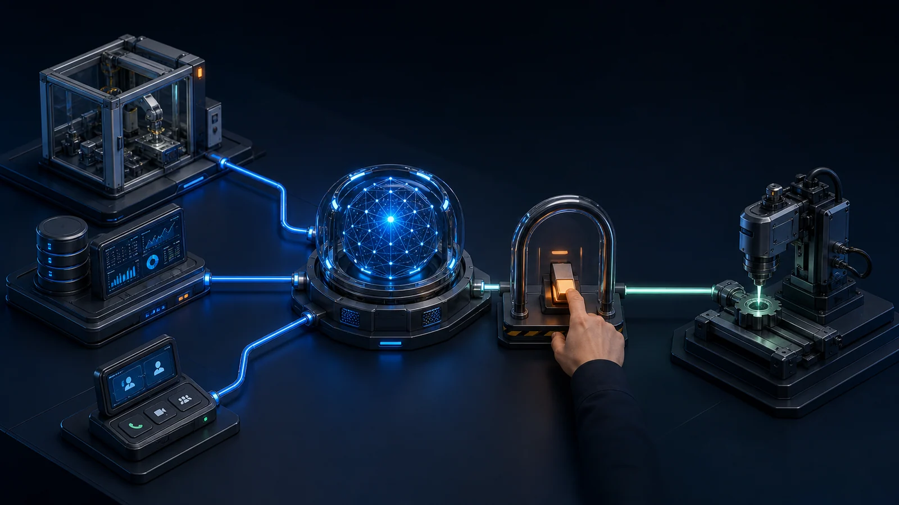
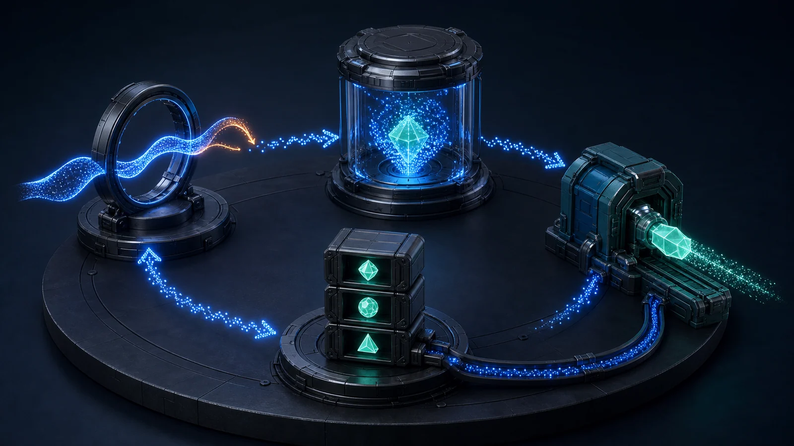
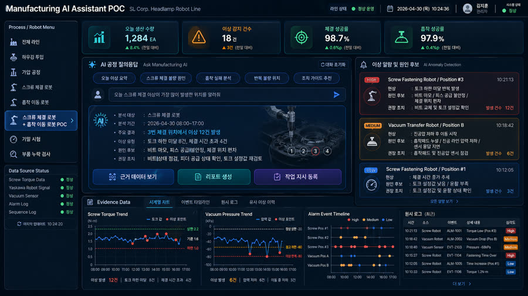

01
AI 기회 발굴 · 데이터 진단
AI 적용 가치가 큰 업무를 선별하고, 실제 학습에 사용할 데이터가 있는지 확인합니다.
- 기회 맵 반복 판단·
대기가 몰린 업무를 찾아 기대 효과와 난이도로 우선순위 결정 - 데이터 진단 설비·
업무 시스템 데이터의 품질과 라벨로 학습 가능성 판정 - 원천 파이프라인 산업 통신 규격(OPC-UA·
Modbus· MQTT) 커넥터와 엣지 전처리로 학습용 데이터 확보
데이터에서 AI 기회를 찾고, 검증된 판단을 실제 업무와 현장 실행으로 연결합니다.
데이터 진단에서 AI 적용 과제를 찾고, 사전 검증으로 효과를 확인한 뒤 업무 시스템과 현장 운영에 연결합니다. 구축 이후에는 모델 성능과 업무 성과가 지속되도록 운영 체계를 함께 만듭니다.


어디에 AI를 쓸지 정하는 일부터, 그 판단이 현장 조치로 이어지게 만드는 일까지. 데이터 진단에서 운영까지 여섯 단계로 나눠 수행합니다.
AI 적용 가치가 큰 업무를 선별하고, 실제 학습에 사용할 데이터가 있는지 확인합니다.

설비·
과제·

현장 검증으로 성과를 확인하고, 사람의 검토·

AI를 MES·

모델 운영 체계를 갖춰 품질 저하에 대응합니다.
프로젝트에 따라 AX·
설비 이상 조기감지·
영상 인식 교통·
모바일 금융·
영상·
데이터를 어떤 판단과 운영 개선으로 연결했는지 대표 프로젝트로 확인할 수 있습니다.
